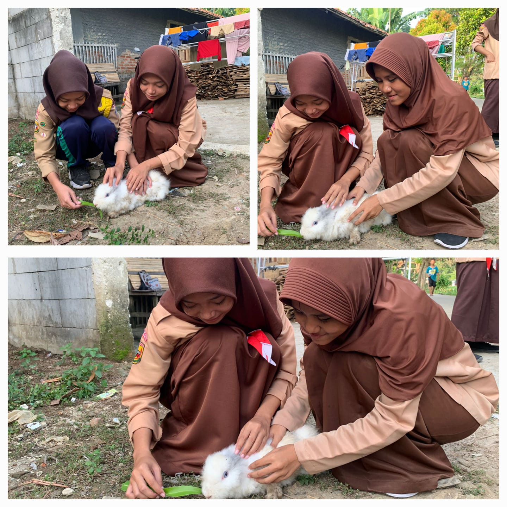
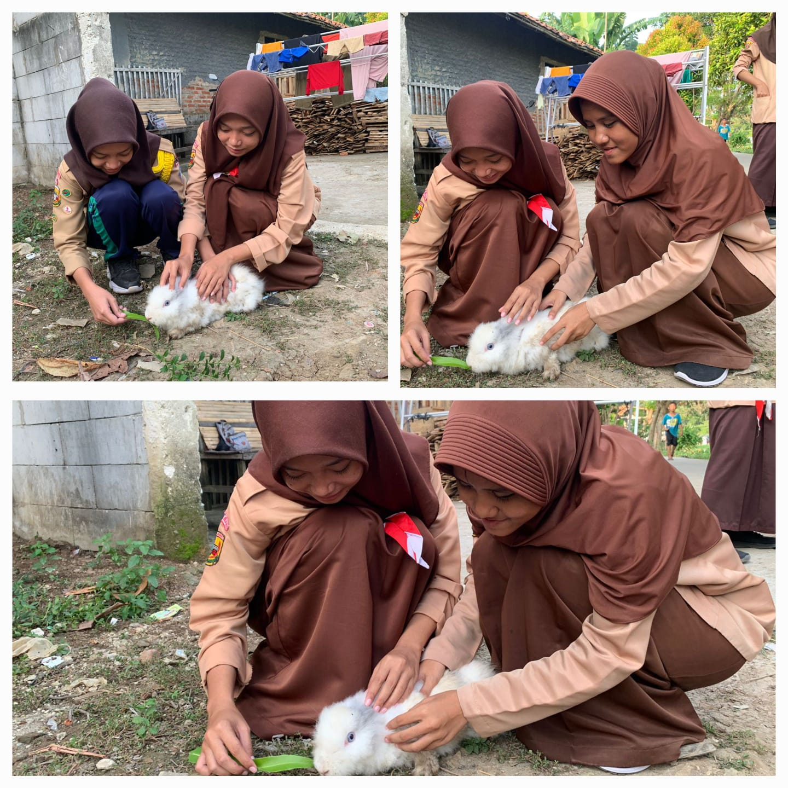

Profile Diri

otih
otih
Tempat Tanggal Lahir
Karawang 03 Desember 2006
Hobby
Berpetualang, Membaca, Melukis/Menggambar, Menulis karangan novel
Pendidikan Formal
- SDN Kemiri 4
- SMPN 1 Kutawaluya
- SMAN 1 Rengasdengklok
Pendidikan Non Formal
- Untuk saat ini pendidikan nonformal yang saya jalani adalah menekuni kegiatan kepramukaan.
Organisasi
- Pramuka dari tahun 2013 sampai dengan sekarang ini 2024.
- Tingkatan terakhir pramuka saya adalah penegak laksana.
- Menjadi anggota osis
Bidang patriotisme dan seni budaya


Dokumentasi pencapaian tkk menyanyi, dokumentasi ini saya ambil pada saat praktek seni budaya di sman 1 rengasdengklok tkk ini di uji oleh bu mega sebagai guru seni budaya di sman 1 rengasdengklok

Dokumentasi pencapaian tkk melukis, dokumentasi ini saya ambil pada saat saya sedang mengerjakan tugas melukis di rumah teman saya tkk ini di uji oleh guru seni budaya di sman 1 rengasdengklok.

Dokumentasi pencapaian tkk pengaran, dokumentasi tkk ini saya ambil pada saat saya sedang mengerjakan tugas bahasa indonesia tkk ini di uji oleh guru b.indonesia sman 1 rengasdengklok.
Bidang ketangkasan dan kesehatan

Dokumentasi pencapaian tkk berenang, dokumentasi ini saya dapatkan ketika praktek renang bulanan di sman 1 rengasdengklok tkk ini di uji oleh guru pelajaran pjoka sman 1 rengasdengklok


Dokumentasi pencapaian tkk gerak jalan tingkat purwa madya dan utama, dokumentasi ini saya ambil ketika pelantikan dan latihan untuk lomba tkk ini di uji oleh pembina pramuka sman 1 rengasdengklok
Bidang keterampilan dan teknik pembangunan
 

Dokumentasi pencapaian tkk peternak kelinci, dokumentasi ini saya ambil pada saat saya sedang memberi makan kelinci kelinci di rumah tkk ini di ui oleh ibu saya yang bernama mulyati

Dokumentasi pencapaian tkk juru anyam, dokumentasi ini saya ambil ketika saya sedang membuat kerajinan di sekolah tkk ini diuji oleh guru pkwu
Bidang sosial, perikemanusiaan, gotong-royong, ketertiban masyarakat, perdamaian dunia dan lingkngan hidup


Dokumentasi pencapaian pengamanan kampung, dokumentasi ini saya ambil pada saat sedang berbagi kepada masyarakat sekitar tkk ini di uji oleh pembina pramuka sman 1 rengasdengklok

Dokumentasi pencapaian tkk p3k, dokumentasi ini saya ambil pada saat sedang latihan pramuka di sman 1 rengasdengklok tkk ini di uji oleh pradana putri sman 1 rengasdengklok
Keikutsertaan Kegiatan
Kegiatan PAM Lebaran/Karya Bakti Pramuka
Kegiatan pam lebaran di karawang kegiatan ini bertujuan untuk keamanan jalan raya pada saat arus mudik.
 \
\
Dokumentasi ini saya ambil pada saat kunjungan bupati di pos pam di karawang.

Dokumentasi ini saya ambil ketika saya sedang pengamanan lalu lintas di jalan karawang, pada saat malam hari.

Dokumentasi ini saya ambil pada saat saya sedang menjaga lalu lintas arus mudik pada pagi hari di karawang.
Kegiatan SAKA BAKTI HUSADA
Kegiatan SAKA BAKTI HUSADA di lakukan di puskesmas kutawaluya

Dokumentasi poto ini saya ambil ketika ada kegiatan saka di puskesmas kutawaluya. Dokumentasi ini saya ambil pada bulan juni.

Dokumentasi ini saya ambil ketika sedang mendaftar pasien dipuskesmas kutawaluya.

Dokumentasi ini saya ambil ketika saya sedang mengukur tinggi badan pasien yang akan di periksa di puskesmas kutawaluya.

Dokumentasi ini saya ambil ketika saya sedang ada kegiatan ska bakti husada di puskesmas kutawaluya.
kegiatan Operasi Bersih di Monumen Rawa Gede
Kegiatan operasi bersih di monumen rawa gede ini adalah kegiatan di pramuka sman 1 rengasdengklok, kegiatan ini bertujuan untuk membersihkan monumen rawa gede.

Dokumentasi ini saya ambil ketika ada kegiatan giat bakti/operasi bersih di monumen rawa gede.

Kegiatan ini saya ambil ketika sedang berpoto bersama bapa yang menulis buku tentang rawa gede.

Dokumentasi ini saya ambil ketika sedang operasi bersih di monumen rawa gede
Kegiatan Gema Ramadhan Zona 4 di Rawamerta
Kegiatan gema ramadhan zona 4 ini di laksanakan di rawamerta, kegiatan ini dilaksanakan pada saat bulan ramadhan 2024, kegiatan ini juga di adakan untuk bersilaturahmi dan berbagi takjil untuk berbuka kepada warga disana.

Dokumentasi ini saya ambil pada saat poto bersama setelah pembukaan untuk gema ramadhan di rawamerta.
Dokumentasi ini saya ambil pada saat saya dan teman teman sedang berbagi takjil kepada warga dijalan.

Dokumentasi ini saya ambil pada saat saya sedang buka puasa bersama setelah berbagi takjil bersama teman teman.
Legalitas
Telah Menyelesaikan Tingkat Penegak Bantara


Telah Menyelesaikan Tingkat Penegak Laksana


Telah Menyelesaikan tingkatan TKK pada 5 bidang kecakapan, mulai dari tingkat Purwa, Madya dan ada beberapa di tingkat Utama

Dokumentasi tkk memasak tingkat purwa, madya, utama
Dokumentasi tkk gerak jalan tingkat purwa, madya, utama

Dokumentasi tkk pengamatan tingkat purwa, madya
Dokumentasi pencapaian tkk menjahit tingkat purwa madya utama, dokumentasi ini saja ambil pada saat menjahit di rumah dan di sekolah pada saat latihan pramuka.
Dokumentasi pencapaian p3k tingkat purwa madya utama, dokumentasi ini saya ambil pada saat saya sedang latihan pramuka di sman 1 rengasdengklok
Project Produktif
Media tanam adalah media yang digunakan untuk menumbuhkan tanaman di akar atau akar masa depan tumbuh berkembang, dan media tanam memungkinkan tajuk tanaman berdiri kokoh, juga digunakan oleh tanaman sebagai situs untuk perang akar sehingga bisa. media dan tanaman pendukung.
video menanam tanaman media tanah

Kelompok kami menggunakan media tanam tanah, media tanam dari tanah adalah bahan atau substrat yang digunakan untuk menanam tanaman dan biasanya berasal dari tanah.
Bahan bahan yang kami siapkan adalah media tanah, sekup untuk menggali tanahnya, bibit kemangi, air, pot, dan air.
Langkah langkah
pertama kalian siapkan pot, lalu masukan tanah kedalam pot.
Yang kedua kalian siapkan bibit kemangi yang akan kalian tanam, lalu kalian masukan bibit kedalam pot yang sudah terisi tanah.
Ketiga kalian ratakan bibit itu dengan sekup.
Terakhir setelah selesai semua siram tanaman itu.
Tunggu beberapa minggu dan jangan lupa untuk selalu menyiramnya.
Penguasaan bahasa asing
Dokumentasi telah melaksanakan percakapan dengan bahasa asing.
video bahasa asing(b.inggris)
Video ini saya ambil ketika sedang berbincang dengan senior saya yang berkuliah di universitas padjadjaran, disini saya beertanya tentang bagaimana cara masuk ke universitas padjadjaran dan apa saja fakultas yang menarik di padjadjaran, beliau juga memberi saya semangat untuk bisa menggapai mimpi saya untuk bisa masuk ke universitas padjadjaran dan mengambil jurusan busnis manajement.